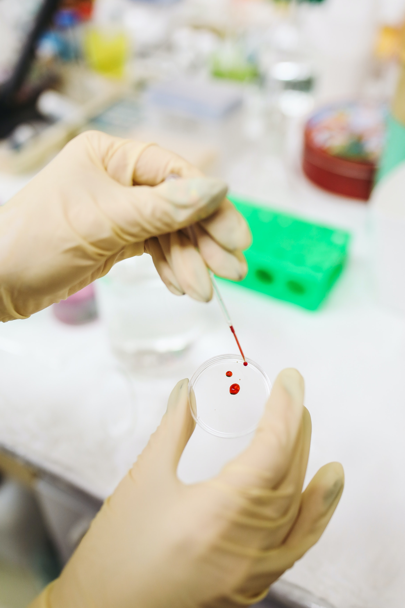
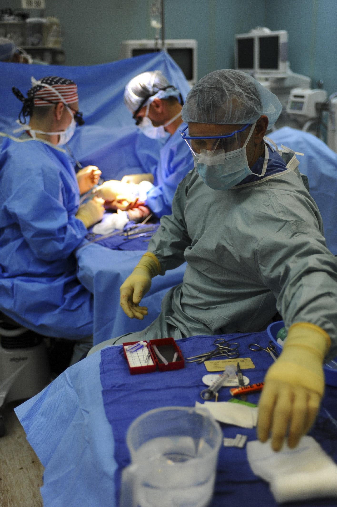
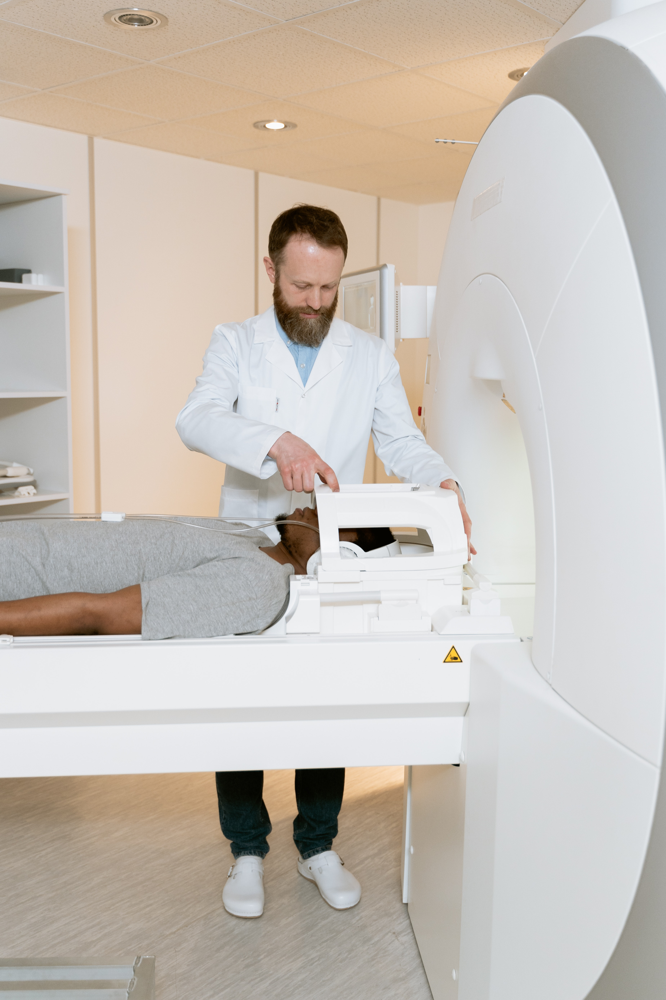

One of the distinguishing factors that marks Sidwah Clinic unique, with respect to other health facilities; such as, clinics and care centers is that they provide both inpatient and outpatient care provisions.

Dialysis Center
Patients with kidney disease often need regular treatments of dialysis.

Birth Center
The birth center aim is to create a birth environment that feels more comfortable to the mother and allows for a cost-effective, family-inclusive birth.
Medical Offices
The medical office runs on communications, and they must be clear and complete as they will impact the health of the patients.

Surgerical Center
Ambulatory surgical centers, also called outpatient surgical facilities, allow patients to receive certain surgical procedures outside a hospital environment.

Nursing Center
Sidwah Clinic offers a living situation for patients whose medical needs aren’t severe enough for hospitalization, but are too serious to manage at home. Sidwah Clinic offers services for heavier medical needs, such as speech and occupational therapy.
Hospice home
Hospice can be a particularly confusing title. It represents a package of insurance benefits that deals with an end-of-life trajectory. It also represents a philosophy of care provision for dying patients as well as official networks that offer hospice care.

Radiology Center
Diagnostic imaging includes CT scans, ultrasounds, X-rays, MRIs and more. While hospitals and even clinics have imaging centers, outpatient facilities help keep costs lower and allow more convenient scheduling for patients.

Mental Health Center
Mental health treatment facilities institution for any mental health issue . Examples of these kinds of facilities are suicidal thoughts treatment, depression treatment, trauma and post-traumatic stress disorder treatment, treatment for anxiety disorders, behavioral disorders and more.
What Our Patients Say
One of the distinguishing factors that marks Sidwah Clinic unique, with respect to other health facilities; such as, clinics and care centers is that they provide both inpatient and outpatient care provisions.
I am happy to have been in their care. – Frank I was admitted to Sidwah's Clinic Labor and Delivery Unit and I am writing this letter to inform you of my experience. I was very nervous entering the emergency room. My nervousness was reduced when I was greeted with several smiles from your staff.
Diana Bishop
Your hospital will be my hospital of choice from now on." "I have had a lot of surgeries and I never had the best-understanding nurse until Patients' Hospital. My nurse from night shift was so awesome - I must have pushed my button for her 20 times the first night to use the bathroom and not one time did she have a frown or snarl on her face.
Nathan James
Get access To Our Services Anywhere
Around The World
CONTACT US


 Back To Top
Back To Top